大作文的框架思维
框架
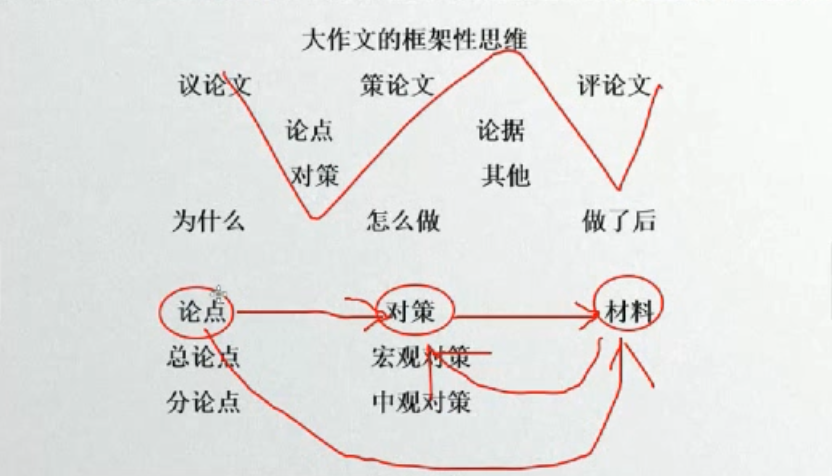
- 议论文(政论文)
- 侧重 为什么
- 论点： 对策
- 主要是为什么要有这样的对策
- 论据
- 策论文
- 侧重 怎么做
- 论点： 对策
- 这个对策该怎么做
- 论据
- 以对策来论述对策
- 难度极高
- 评论文
- 侧重 做了后
- 论点： 对策
- 主题之间的问题
- 论据
论点
论点 是 对策，来源自材料。
论点来源于材料，
第一讲 阅读材料篇和论点篇
阅读材料篇
阅读材料 三步走
- 区分理论性材料和 案例性材料；
- 定性：理论材料：定性；案例材料：公式
- 段落之间的逻辑：通过段落之间主题的关联性以及段落间内容属性关系，确定出段落间的逻辑关系
注
第二步，定性的主要目的是：材料中宏对策为总论点，中宏对策为分论点
第三步，段与段逻辑主要为形成论据部分做准备
转化思维
材料 -> 微观 -> 中观 -> 分论点 -> 总论点
微观 -> 中观 《=》中观 -> 微观
微观：个人化的角度。
中观宏观：比较大的。
理论材料：定性
特征：单纯的理论，不容易定性
主要将各个 问题、原因、对策、定义、危害、意义、成就、背景等九大属性，各个归类，需要的时候，去对应的文件夹去拿。
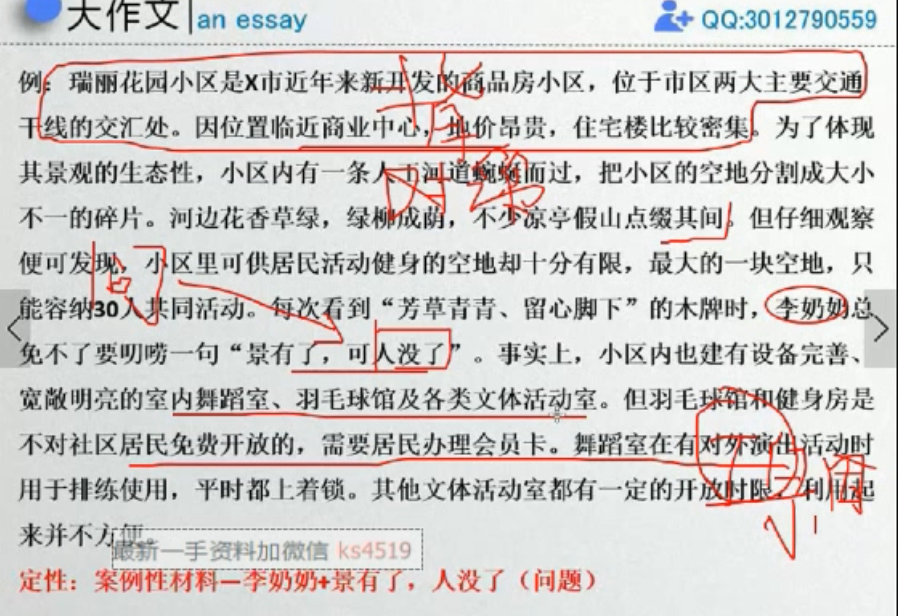案例材料：公式
特征：纯故事材料，没有理论引申；XXX的故事
公式：
- 主体+成就+意义；
- 主体+问题+原因+危害+对策+意义
将定性的一个个标注在材料中，如下图
总论点：材料中最宏观的对策。
主旨要准、不跑题：三种方法可以相互印证，比如采用其中的方法之后，要用第二种、第三种去验证。
如何判断宏观对策？
宏观对策法：一般材料中高级别官员或政府报告内容为宏观对策，一般为主旨 <此方法最常用> 找最大的
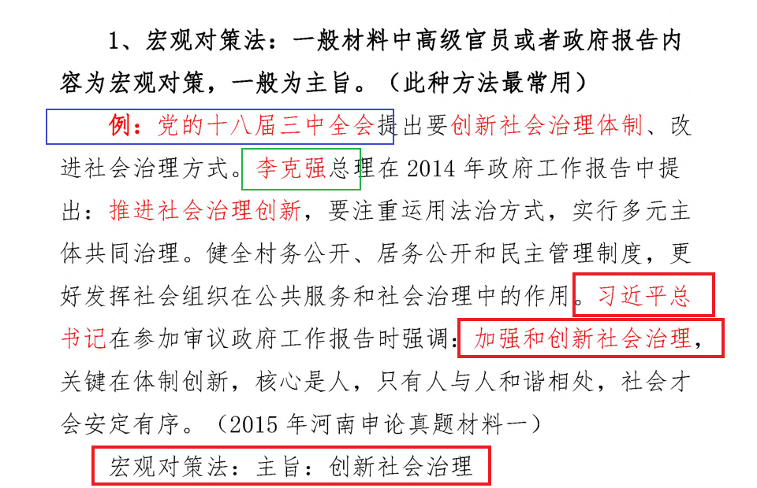 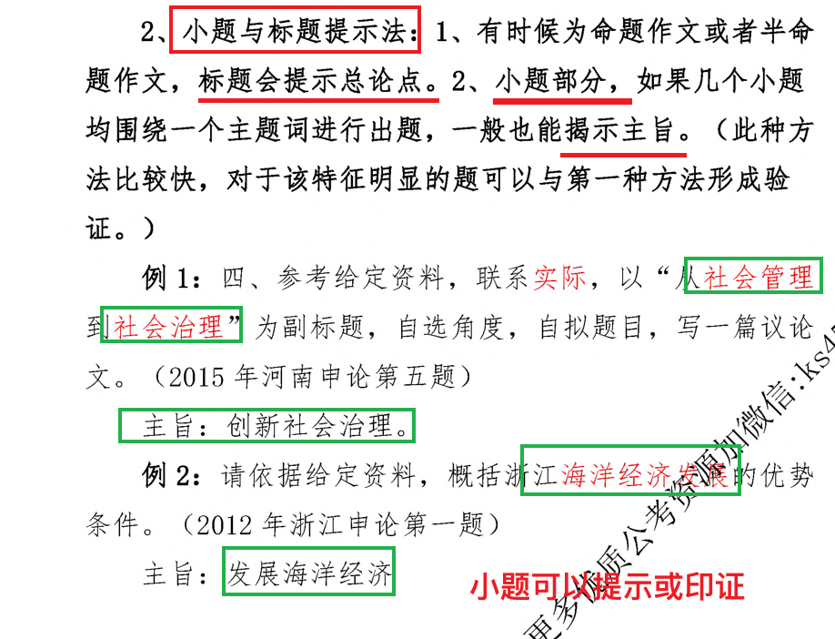 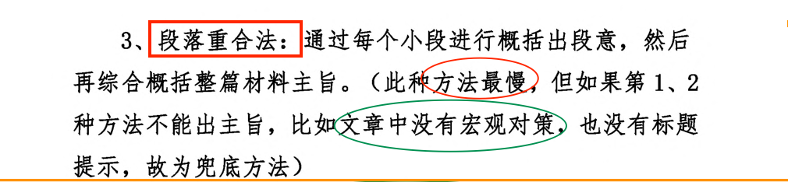
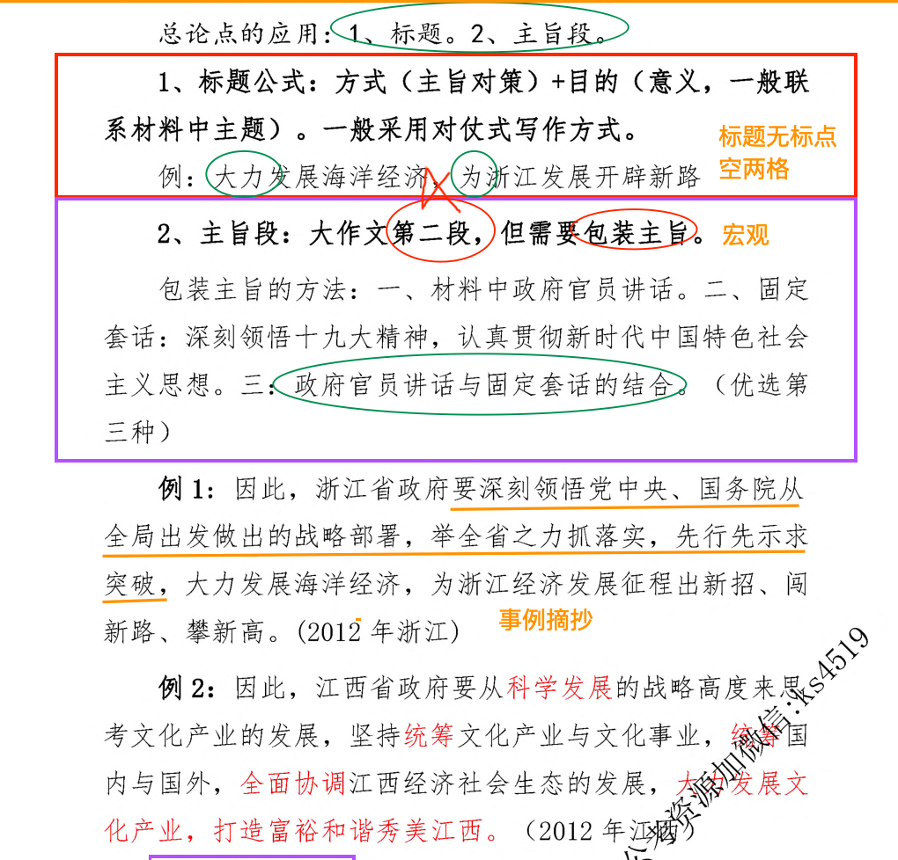
分论点与总论点对应，多理解十九大、科学发展观。
快速准确的定位政治、经济、文化、生态、民生。
所谓要素，就是组成论据的最⼩单位，这些要素⼤多来源于材料，或者是对材料 压缩和转换，这也是咱们为啥要求定性的原因。
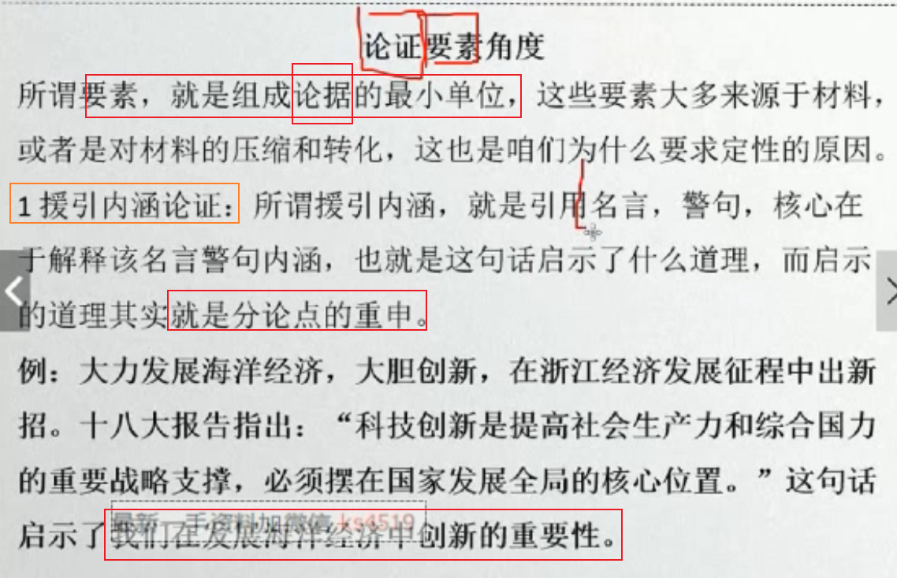
第二讲 十九大
十九大
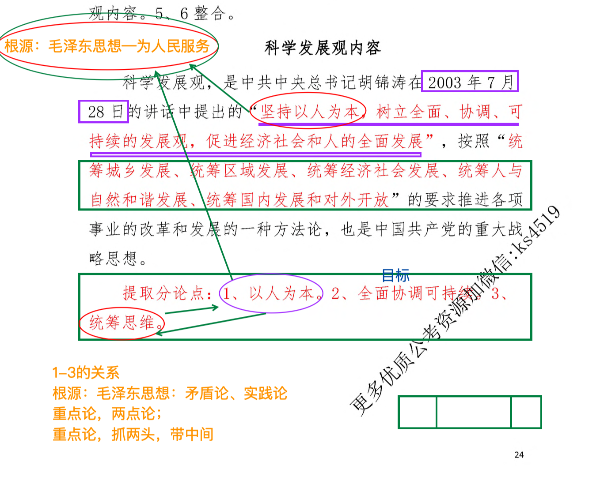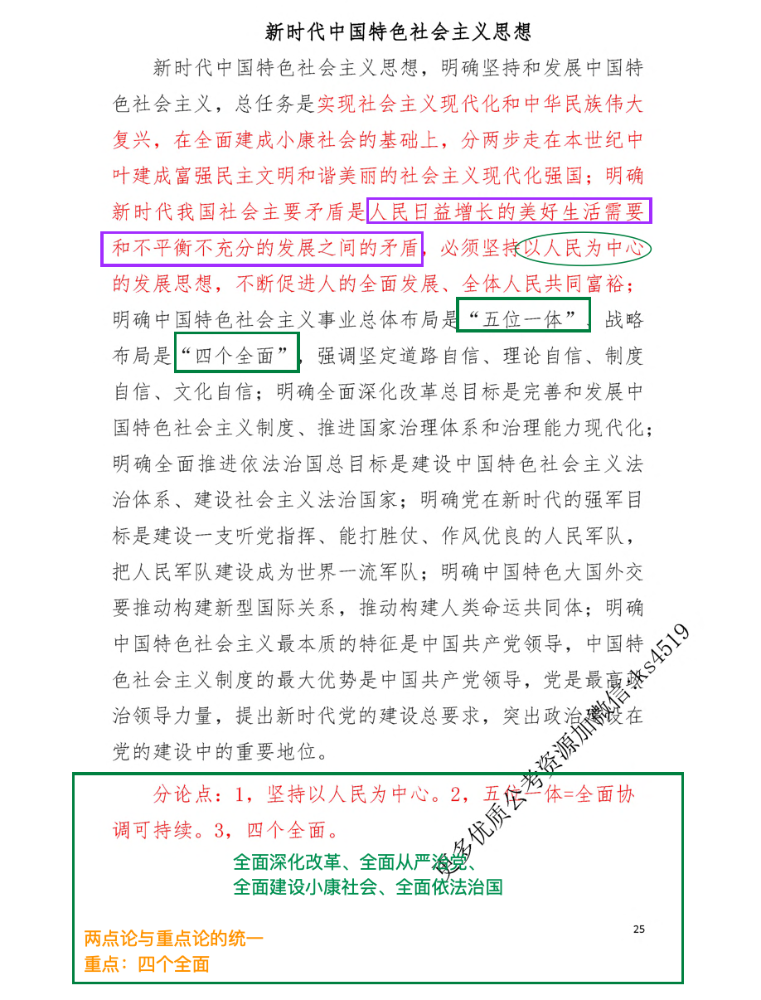
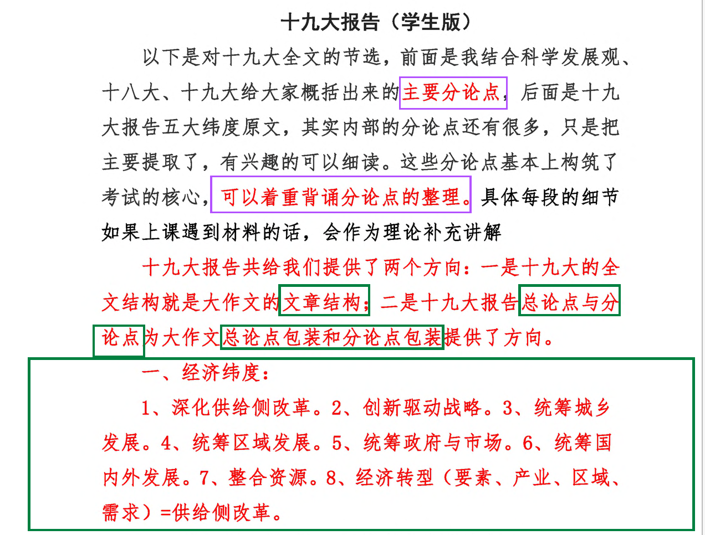
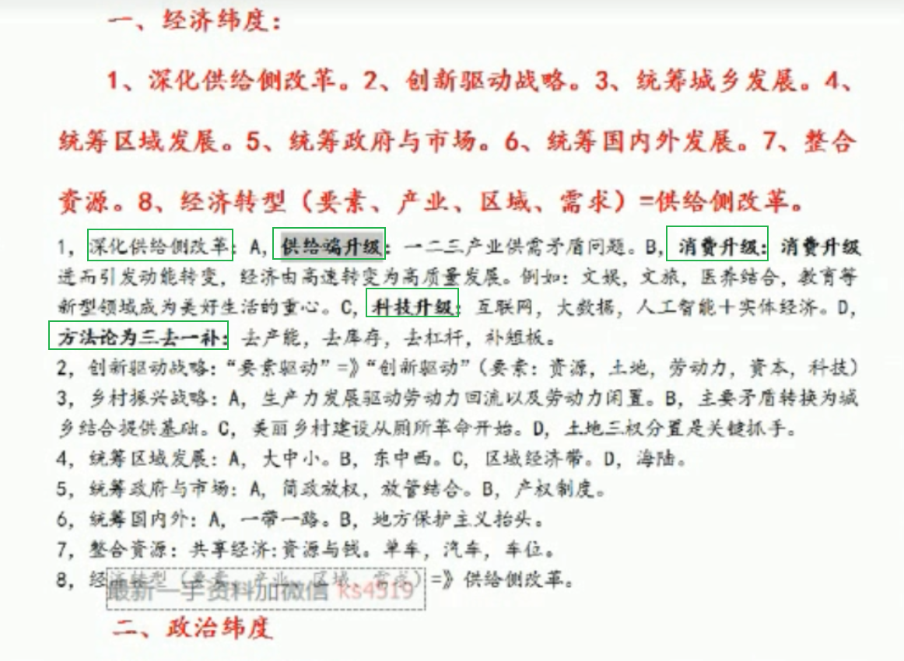
框架
阅读材料 三步走
- 区分理论性材料和 案例性材料；
- 理论材料：定性；
- 案例材料：公式